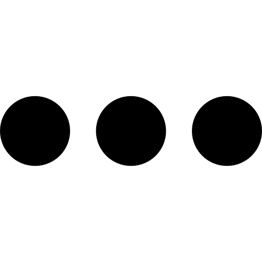

- Páginas para editores desconectados
- Contribuciones
- Discusión
Páginas nuevas
Herramientas
- Herramientas
- General
- Atom
- Subir archivo
- Páginas especiales
- Versión para imprimir
- Obtener URL acortado
Las páginas con más de un mes de antigüedad no se muestran.
Por favor, lee Wikipedia: Patrulla Páginas Nuevas:
- no muerdas a los novatos: dales un tiempo antes de avisarles con plantillas. Considera dejarles en sus páginas de discusión la la plantilla de bienvenida y, cuando proceda, la plantilla {{aviso borrado}}.
-
los artículos no deben ser marcados con la plantilla de borrado rápido si no tienen contexto o contenido momentos después de la creación, ya que no todos los usuarios colocan toda la información en su primera edición.
Importante: Considera también revisar los espacios de nombres distintos al principal, especialmente los anexos, aquí.
(recientes · primeras) Ver (50 siguientes · 50 anteriores) (20 · 50 · 100 · 250 · 500).
- 22:47 29 sep 2023 Mere Boynton (hist. · editar) [2842 bytes] NishiroK123 (discusión · contribs.) (Creado al traducir la página «Mere Boynton») Etiquetas: Traducción de contenido Traducción de contenido, versión 2
- 22:41 29 sep 2023 Caso postdirectivo (hist. · editar) [1106 bytes] Elcasudo (discusión · contribs.) (Página creada con «El '''caso postdirectivo''' es un caso gramatical presente en el idioma lezgiano, que indica hacia algo, aunque es usado ocasionalmente. El sufijo para este caso es: -''хъди'' (-''qhdi''){{cita web|url=http://www.peterlin.pl/lezgi/casesystem.html|fechaacceso= 29/9/2023|título=The case system of Lezgi|idioma=en|sitioweb=peterlin}} Ejemplo * кивалихъди зверна ** za k'waliqhdi zwerna ** Corr…») Etiquetas: Edición desde móvil Edición vía web móvil Edición móvil avanzada
- 22:41 29 sep 2023 Manuel Tovar Conde (hist. · editar) [2510 bytes] Strakhov (discusión · contribs.) (............)
- 22:29 29 sep 2023 Valle Morín (hist. · editar) [2294 bytes] Rjgalindo (discusión · contribs.) (Página creada con «{{Ficha de entidad subnacional |nombre original = San Casimiro de Güiripa |nombre completo = San Casimiro |país = Venezuela |unidad = Localidad |tipo_superior_1 = Estado |superior_1 = {{VEN|D}} |tipo_superior_2 = Municipio |superior_2 = 20px|borde|link= San Casimiro |bandera…») (Etiqueta: editor de código 2017)
- 22:29 29 sep 2023 Valle Morín (hist. · editar) [2294 bytes] Rjgalindo (discusión · contribs.) (Página creada con «{{Ficha de entidad subnacional |nombre original = San Casimiro de Güiripa |nombre completo = San Casimiro |país = Venezuela |unidad = Localidad |tipo_superior_1 = Estado |superior_1 = {{VEN|D}} |tipo_superior_2 = Municipio |superior_2 = 20px|borde|link= San Casimiro |bandera…») Etiqueta: editor de código 2017
- 22:22 29 sep 2023 Caso adirectivo (hist. · editar) [1167 bytes] Elcasudo (discusión · contribs.) (Página creada con «El '''caso adirectivo''' Es un caso gramatical que aparece en el idioma lezgiano que originalmente se usaba para decir en dirección cercana a algo. Ahora rara vez se utiliza como se utilizaba antes, Su sufijo es: -''вди'' (-''vdi'').{{cita web|url=http://www.peterlin.pl/lezgi/casesystem.html|fechaacceso= 29/9/2023|título=The case system of Lezgi|idioma=en|sitioweb=peterlin}} En la actualidad este Caso (gramát…») (Etiquetas: Edición desde móvil, Edición vía web móvil, Edición móvil avanzada)
- 22:21 29 sep 2023 Hans Hedtoft (hist. · editar) [1854 bytes] Rastrojo (discusión · contribs.) (de en:Hans Hedtoft, versión https://en.wikipedia.org/w/index.php?title=Hans_Hedtoft&oldid=1168642268)
- 22:15 29 sep 2023 Partido Laborista Progresista (Estados Unidos) (hist. · editar) [5829 bytes] Tetsou TheIronman (discusión · contribs.) (Creado al traducir la página «Progressive Labor Party (United States)») (Etiquetas: Traducción de contenido, Traducción de contenido, versión 2)
- 22:11 29 sep 2023 Marac (Trinidad y Tobago) (hist. · editar) [2674 bytes] Aitorembe (discusión · contribs.) (Creación de página de localidad de Trinidad y Tobago.)
- 22:08 29 sep 2023 Malgretoute (hist. · editar) [2462 bytes] Aitorembe (discusión · contribs.) (Creación de página de localidad de Trinidad y Tobago.)
- 22:07 29 sep 2023 Viggo Kampmann (hist. · editar) [2598 bytes] Rastrojo (discusión · contribs.) (de en:Viggo Kampmann, versión https://en.wikipedia.org/w/index.php?title=Viggo_Kampmann&oldid=1157376456)
- 22:04 29 sep 2023 Lothian (Trinidad y Tobago) (hist. · editar) [2320 bytes] Aitorembe (discusión · contribs.) (Creación de página de localidad de Trinidad y Tobago.)
- 22:01 29 sep 2023 Lengua Village-Barrackpore (hist. · editar) [2527 bytes] Aitorembe (discusión · contribs.) (Creación de página de localidad de Trinidad y Tobago.)
- 21:58 29 sep 2023 La Savanne (Princes Town) (hist. · editar) [2322 bytes] Aitorembe (discusión · contribs.) (Creación de página de localidad de Trinidad y Tobago.)
- 21:56 29 sep 2023 La Ruffin (hist. · editar) [2320 bytes] Aitorembe (discusión · contribs.) (La parroquia de Riós en español es denominada Trepa, mientras que la del municipio de Villardevós es denominada con el exónimo Fumaces y Trepa, por lo que no hay nada que desambiguar...)
- 21:56 29 sep 2023 Daniela Giordano (hist. · editar) [4076 bytes] Teodoromix (discusión · contribs.) (Creación artículo)
- 21:52 29 sep 2023 La Lune (hist. · editar) [2333 bytes] Aitorembe (discusión · contribs.) (Creación de página de localidad de Trinidad y Tobago.)
- 21:50 29 sep 2023 Radio La Mexicana (hist. · editar) [5728 bytes] 186.11.22.106 (discusión) (Página creada con «== Expansión == Al momento de su lanzamiento en junio de 2023 la Radio ya contaba con frecuencias en La Ligua, Casablanca, Melipilla, San Fernando, Constitución, Parral, Chanco, Futrono, Fresia, Ancud y Coyhaique. Así ha sido la expansión desde su marcha blanca y lanzamiento en junio de 2023: * El 5 de junio de 2023 llega a La Ligua a través de la frecuencia 90.9 MHz, a Casablanca a través de la frecuencia 96.9 MHz, a Melipilla a…») (Etiquetas: Edición desde móvil, Edición vía web móvil, posible problema, Enlaces a desambiguaciones)
- 21:48 29 sep 2023 Kumar Village (hist. · editar) [2286 bytes] Aitorembe (discusión · contribs.) (Creación de página de localidad de Trinidad y Tobago.)
- 21:43 29 sep 2023 Jordan Village (hist. · editar) [2383 bytes] Aitorembe (discusión · contribs.) (Creación de página de localidad de Trinidad y Tobago.)
- 21:41 29 sep 2023 Clasificación para los Juegos Olímpicos de Roma 1960 (hist. · editar) [6233 bytes] Chile2011 (discusión · contribs.) (Puse la repartición de los cupos y una referencia) (Etiquetas: Edición desde móvil, Edición vía web móvil, sin categorizar, Edición visual)
- 21:38 29 sep 2023 Canto budista (hist. · editar) [8796 bytes] Dhammadharo (discusión · contribs.) (Creado al traducir la página «Buddhist chant») (Etiquetas: Traducción de contenido, Traducción de contenido, versión 2)
- 21:31 29 sep 2023 Chorros de Cura (hist. · editar) [2937 bytes] Rjgalindo (discusión · contribs.) (Página creada con «{{Ficha de cuerpo de agua | nombre = Chorros de Cura | nombre_local = | imagen = Chorros de cura cascada guariquito.jpg | pie = Vista angosta de la Cascada | país = {{bandera2|Venezuela}} | división_administrativa_tipo = Municipio | división_administrativa = Casimiro | subdivisión_administrativa_tipo = Estado | subdivisión_administrativa = Aragua | población_cercana = Valle Morín | cuenca_hidrográfica = Río…») (Etiqueta: editor de código 2017)
- 21:31 29 sep 2023 Qubba Almorávide (hist. · editar) [7492 bytes] Dorieo (discusión · contribs.) (Página creada con «{{Ficha de monumento | nombre = Qubba Almorávide | nombre_local = {{lang-ar|القبة المرابطية}} | imagen = Almoravid Qubba IMG 5629.jpg | pie_imagen = | catalogación = | catalogación2 = | catalogación3 = | catalogación4 = | país = {{MAR}} | tipo_división_administrativa = | división_administrativa = | tipo_subdivisión_administrativa = | subdivisión_administrativa = |…»)
- 21:30 29 sep 2023 Decreto 6323 (hist. · editar) [7303 bytes] Borboteo (discusión · contribs.) (creación de artículo)